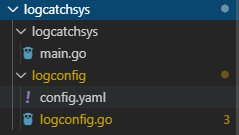
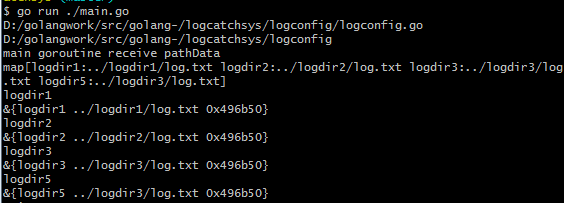

前文中已经完成了文件的监控，kafka信息读写，今天主要完成配置文件的读写以及热更新。并且规划一下系统的整体结构，然后将之前的功能串起来形成一套完整的日志采集系统。
前情提要
上一节我们完成了如下目标
1 完成kafka消息读写
2 借助tailf实现文件监控，并模拟测试实时写文件以及文件备份时功能无误。
本节目标
1 编写系统结构，在主函数中加载配置
2 管理配置文件，实现热更新
实现文件管理，支持热更新
golang中vipper库提供了配置文件的读取和监控功能，我们可以监控配置文件从而实现热更新。
先规划下日志采集系统的目录结构

logcatchsys为项目根目录，其下logcatchsys文件夹中main.go为系统启动的主函数，该文件加载配置，根据配置启动协程，监控指定目录的日志文件，当配置更新时，main做热更新，如果路径从配置中删除，则中止对应的监控协程。如果有新的路径添加到配置文件，则启动协程监控，如果路径有修改，则中止原路径协程，启动新的协程监听修改后的路径。
logconfig为配置存放的路径，logconfig.go主要负责配置的管理，包括监控。
1 | var onceLogConf sync.Once |
在logconfig.go中定义了once操作的变量onceLogConf，该变量保证监控配置的协程退出后只执行一次析构。
ConfigData结构体存储了配置文件中路径的信息，ConfigKey表示路径名，ConfigValue表示路径值，ConfigCancel存储上下文的CancelFunc，因为一个路径对应一个日志文件，监控日志文件就要开启协程，我是通过context管理监控日志的协程的。
在config.yaml中记录的路径信息如下:
1 | configpath: |
logdir1对应ConfigKey
../logdir1/log.txt对应ConfigValue
接下来在logconfig.go中我实现了配置文件的加载
1 | func ReadConfig(v *viper.Viper) (interface{}, bool) { |
以及配置文件的监听
1 | func WatchConfig(ctx context.Context, v *viper.Viper, pathChan chan interface{}) { |
当配置文件config.yaml有变动时，OnConfigChange传入的匿名函数会触发，从而将configpath节点的value传入chan中，这样main函数可以从外部获取最新的配置文件。
ctx为上下文，当main函数执行上下文中止时，监控配置的协程会自动退出。
根据配置变动，实现热更新
在main.go中,定义了mainOnce控制主协程资源析构，并且通过ConstructMgr全局函数构造configMgr这样的map记录最新的配置信息。
1 | var mainOnce sync.Once |
接下来实现主函数
1 | func main() { |
在主函数中读取配置，并且将配置的路径信息存储在configMgr中。接着启动了一个协程用来监控配置文件，并且我实现了主协程的资源回收。
我们在main中继续添加接受监控协程的数据逻辑。
1 | for { |
主协程接受数据后对比新旧数据，将旧的配置中被删除的路径剔除，增加和修改新的路径。
日志监控留给之后处理，这里打印下更新后的配置信息。
整体运行下main函数，然后我们手动修改config.yaml，将logdir4修改为logdir5，可以看到如下信息

证明我们的热更新处理逻辑没有问题。下一节基于现有的逻辑,添加日志文件的监控处理，启动多个协程管理日志文件。
源码下载
https://github.com/secondtonone1/golang-/tree/master/logcatchsys
我的公众号